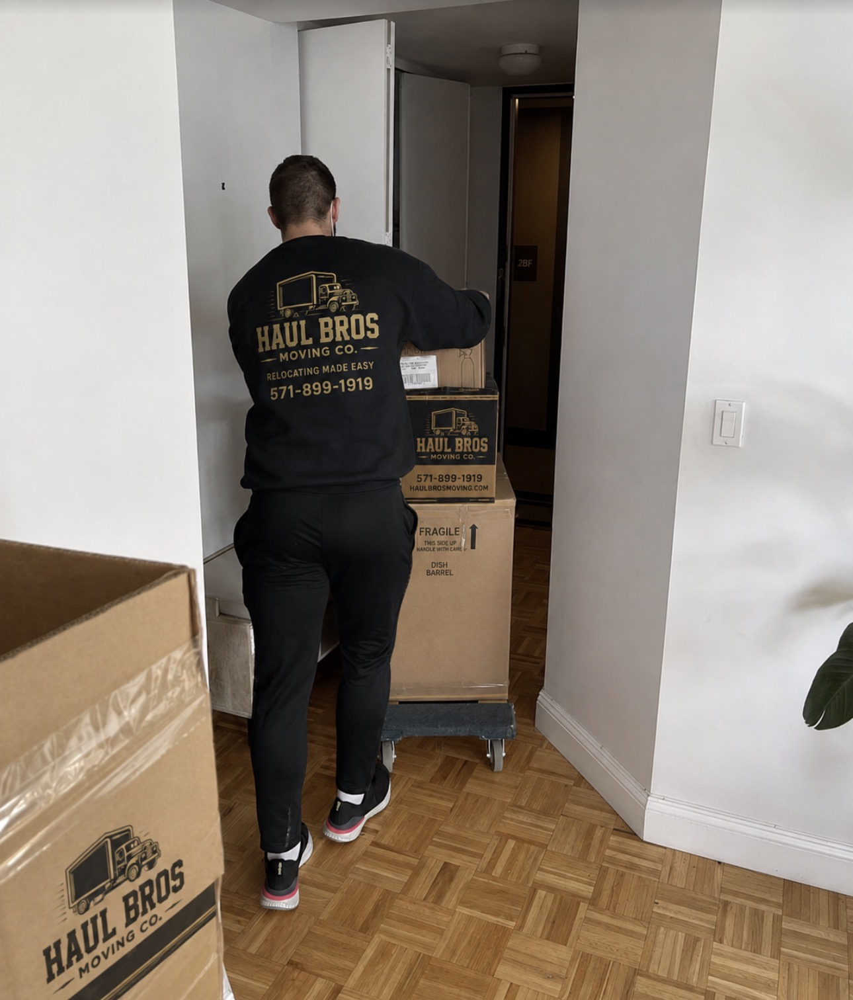

Updated October 2026 | Winter 2026–2027 Moving Guide
Planning a move during winter in Northern Virginia?
Whether you're relocating from Woodbridge to Fairfax, moving into a townhouse in Stafford, or transitioning to a new apartment in Alexandria, winter moving requires additional preparation.
Cold temperatures, shorter daylight hours, snow, freezing rain, icy sidewalks, and unpredictable road conditions can make moving more challenging than during warmer months.
But winter relocation is entirely manageable when conditions are safe and the move is properly planned.
In fact, moving outside the busiest summer months may offer more scheduling flexibility with some moving companies. However, winter does not automatically guarantee lower prices, and severe weather can cause delays or rescheduling.
At Haul Bros Moving Co LLC, we help customers with residential moving, packing, labor-only moving, and other qualifying relocation services throughout Northern Virginia.
This complete guide covers winter moving costs, weather precautions, furniture protection, packing tips, and a step-by-step checklist to help you prepare for a successful move.
Quick Answer: Is Winter a Good Time to Move in Northern Virginia?
Winter can be a practical time to move in Northern Virginia, especially for customers with flexible schedules.
However, the biggest consideration is weather-related safety.
Five essential winter moving tips:
- Check the forecast and road conditions before moving day.
- Clear snow and ice from entrances, driveways, stairs, and loading areas.
- Protect floors from water, mud, and road salt.
- Pack electronics and temperature-sensitive belongings carefully.
- Discuss weather delays and rescheduling procedures with your moving company.
For local moves, Haul Bros Moving Co LLC's standard rates begin at $395 for the first two hours with two movers and a truck, followed by $159 per additional hour.
Actual moving costs depend on the inventory, crew size, travel, access conditions, and time required.
1. What Is Winter Like in Northern Virginia?
Winter in Northern Virginia generally covers December through February, although cold temperatures and occasional winter weather can occur during November and March.
Conditions vary from year to year.
Some winter days are dry and relatively mild. Others may bring freezing temperatures, snow, sleet, or freezing rain.
Common Winter Moving Challenges
Snow and Ice
Slippery surfaces can make carrying furniture and moving boxes unsafe.
Freezing Rain
Even a small amount of ice can create hazardous conditions on stairs, driveways, and sidewalks.
Shorter Daylight Hours
Winter provides fewer daylight hours for loading and unloading.
Wet Surfaces
Rain, melting snow, and slush can create tracking and floor-protection challenges.
Traffic Delays
Winter storms can affect major highways and neighborhood streets.
Cold Temperatures
Some belongings require special care when exposed to extreme cold.
Important Northern Virginia Roads
Winter moving routes may involve:
- Interstate 95.
- Interstate 66.
- Interstate 395.
- Interstate 495.
- Route 1.
- Route 123.
- Route 28.
- Fairfax County Parkway.
- Prince William Parkway.
- Route 610 in Stafford.
Check actual road conditions rather than assuming a route is safe because a major highway has been treated.
2. Is It Cheaper to Move During Winter?
Winter may offer more scheduling flexibility than peak summer moving periods.
However, the total cost depends on the moving company's rates, the size of the household, access conditions, and how long the job takes.
Potential Benefits of Winter Moving
- More flexibility when requesting certain moving dates.
- Less competition for some rental and moving services.
- More opportunities to schedule a preferred arrival window.
- Less demand during some nonholiday weekdays.
These are potential seasonal advantages, not guaranteed discounts.
Possible Additional Challenges
- Weather-related delays.
- Icy driveways.
- Longer loading times.
- Restricted truck access.
- Rescheduling due to hazardous conditions.
Does Haul Bros Charge More for Winter Moves?
Haul Bros' standard local moving packages provide a starting point for estimates. Customers should confirm the current rate and any job-specific charges in writing.
A winter date alone does not establish whether a move will cost more or less.
3. How Much Do Winter Movers Cost in Northern Virginia?
Haul Bros Moving Co LLC offers the following standard local moving packages.
| Moving Package | First 2 Hours | Additional Hour |
|---|---|---|
| 2 movers + truck | $395 | $159 |
| 3 movers + truck | $495 | $189 |
| 4 movers + truck | $695 | $249 |
| 2 movers — labor only | $295 | $125 |
A two-hour minimum applies to standard packages.
Example 1: One-Bedroom Winter Move
A customer moves from a one-bedroom apartment in Woodbridge to another apartment in Lake Ridge.
Assume two movers and a truck complete the job in four hours.
First two hours: $395.
Two additional hours: $318.
Illustrative total: $713.
Example 2: Two-Bedroom Winter Move
A customer relocates from a townhouse in Springfield to a home in Burke.
Assume three movers and a truck complete the move in five hours.
First two hours: $495.
Three additional hours: $567.
Illustrative total: $1,062.
Example 3: Four-Bedroom Winter Move
A family relocates from Stafford to Fairfax.
Assume four movers and a truck complete the job in eight hours.
First two hours: $695.
Six additional hours: $1,494.
Illustrative total: $2,189.
These figures are calculations based on Haul Bros' stated standard local rates, not independently measured regional averages or guaranteed quotes.
Additional trucks, packing materials, specialty handling, or other services may require separate pricing.
Winter conditions can also affect working time, even when no separate standard weather surcharge applies.
4. The Complete Winter Moving Checklist
Four to Six Weeks Before Moving
- Research and contact moving companies.
- Request a written moving estimate.
- Choose a preferred moving date.
- Ask about weather-related rescheduling.
- Begin decluttering.
- Arrange packing supplies.
- Review parking restrictions at both properties.
- Identify items that may be sensitive to cold temperatures.
Three Weeks Before Moving
- Confirm the moving appointment.
- Begin packing nonessential items.
- Arrange utility transfers.
- Contact property managers or homeowners associations.
- Check truck parking requirements.
- Prepare an inventory of furniture and boxes.
Two Weeks Before Moving
- Continue packing.
- Arrange any needed junk removal.
- Confirm elevator reservations.
- Check that heating and electricity will be available at the destination.
- Prepare protective floor coverings.
- Organize winter clothing and emergency supplies.
One Week Before Moving
- Monitor the forecast.
- Confirm access to both properties.
- Review the moving inventory.
- Pack important documents separately.
- Prepare a winter essentials bag.
- Discuss any forecasted weather concerns with your movers.
48 Hours Before Moving
- Check National Weather Service forecasts.
- Review Virginia 511 road information.
- Confirm the moving company's weather plan.
- Identify safe loading and unloading areas.
- Make arrangements for snow and ice removal if needed.
Moving Day
- Inspect stairs and walkways for ice.
- Confirm truck access.
- Keep children and pets away from loading areas.
- Protect floors from moisture.
- Keep important belongings with you.
- Monitor changing conditions.
- Follow the crew's safety instructions.
After Moving
- Confirm heating is working.
- Inspect furniture and belongings.
- Remove wet packing materials.
- Dry any moisture brought inside.
- Unpack essential household items.
- Update your address and important accounts.

5. How to Prepare Your Driveway and Walkways for Winter Moving
Safe access is one of the most important parts of a winter move.
A professional moving crew may need to carry heavy furniture, appliances, and boxes between the home and truck.
Snow and ice can make these tasks unsafe.
Clear the Entire Carrying Route
Check:
- Front steps.
- Sidewalks.
- Driveways.
- Porches.
- Garage entrances.
- Loading areas.
- Access paths at the destination.
Treat Icy Surfaces
Use appropriate ice-melting or traction materials according to property guidance and product instructions.
Check Staircases
Outdoor stairs can remain icy even when nearby pavement appears clear.
Prepare Truck Parking
Make sure the moving truck has a safe and legal location to park.
Do Not Ignore Hidden Ice
Shaded areas, bridges, ramps, and untreated surfaces can remain slippery after other areas have thawed.
Safety comes first: If access is hazardous, the move may need to be delayed until conditions improve.
6. How to Protect Floors During a Winter Move
Winter moving often introduces moisture, dirt, slush, and road salt into a property.
Without preparation, these materials can damage flooring or create slippery surfaces.
Use Appropriate Floor Protection
Depending on the surface, movers may use protective runners, coverings, or other materials.
Keep Entryways Organized
Provide a clear path for moving furniture.
Remove Excess Moisture
Wet areas should be addressed promptly.
Protect Hardwood Floors
Use floor-safe coverings and avoid leaving standing water on wood surfaces.
Protect Carpets
Temporary carpet protection may help reduce dirt and moisture transfer.
Protect the Destination Too
Many customers focus on protecting their old home but forget that the new residence also needs preparation.
Haul Bros includes basic floor protection in qualifying standard moving services. Additional protection requirements should be discussed before moving day.

7. How to Pack Furniture and Electronics for Cold Weather
Some household belongings require additional care during winter.
Wooden Furniture
Avoid unnecessary exposure to moisture and extreme temperature changes.
Use appropriate furniture protection and allow items to adjust gradually to indoor conditions.
Electronics
Cold electronics may develop condensation when moved into warmer environments.
Keep them dry and follow manufacturer guidance before powering them on.
Televisions
Use suitable television cartons or protective materials when available.
Keep screens protected from pressure and impacts.
Glass and Mirrors
Pack carefully and avoid sudden temperature changes when possible.
Artwork and Antiques
High-value or temperature-sensitive items may require specialized packing or climate-controlled transportation.
Musical Instruments
Pianos and other instruments can be sensitive to temperature and humidity changes.
Discuss specialty handling requirements before booking.
Houseplants
Many plants are sensitive to freezing temperatures.
Consider transporting plants separately in a temperature-controlled passenger vehicle when safe and appropriate.
Medications
Keep medications with you and follow their labeled storage instructions.
8. Moving During Snow or Freezing Rain: Should You Reschedule?
Sometimes the safest decision is to postpone a move.
The National Weather Service advises delaying travel when significant winter weather makes road conditions hazardous.
Conditions That May Require Rescheduling
- Ice-covered roads.
- Dangerous driveway access.
- Freezing rain.
- Significant snow accumulation.
- Road closures.
- Severe winter storm warnings.
- Unsafe truck access.
- Restricted visibility.
What Should Customers Do?
Contact the moving company as early as possible.
Discuss:
- Current road conditions.
- Property access.
- Alternative moving dates.
- Any building or elevator reservations.
- Written rescheduling terms.
Do not assume a moving crew can safely operate during every winter storm.
Where to Check Road Conditions
Visit:
Virginia 511 road conditions and travel alerts
VDOT winter weather information
National Weather Service: https://www.weather.gov/
These resources can help customers make informed decisions about travel conditions.
9. Winter Moving in Woodbridge, VA
Woodbridge and nearby Prince William County communities include apartments, townhouses, condominiums, and single-family homes.
Winter moving considerations may include:
- Residential driveway access.
- Snow-covered townhouse stairs.
- Apartment parking.
- Neighborhood road conditions.
- Building elevator reservations.
Common Woodbridge Service Areas
- Woodbridge.
- Dale City.
- Lake Ridge.
- Occoquan.
- Dumfries.
- Triangle.
Example: Moving From Dale City to Lake Ridge
A customer moving between multilevel townhouses should confirm that both sets of outdoor steps are clear of snow and ice.
Parking arrangements should also be reviewed to ensure safe truck access.
10. Winter Moving in Fairfax County, VA
Fairfax County includes many residential communities with different access conditions.
Haul Bros serves qualifying moves in:
- Fairfax.
- Springfield.
- Burke.
- Chantilly.
- Centreville.
- Vienna.
- Annandale.
- Reston.
- Herndon.
- McLean.
- Tysons.
Apartment and Condominium Moves
Confirm building requirements and elevator reservations.
Townhouse Moves
Inspect exterior staircases and parking areas.
Single-Family Home Moves
Prepare driveways and walkways for safe access.
Snow Removal Responsibilities
Do not assume every residential street will be cleared immediately after a storm.
Virginia Department of Transportation snow-removal priorities generally focus first on interstate highways and major roads, with lower-volume residential streets addressed later.
Check the responsible local authority for your specific road. See Fairfax County’s Guide to Snow for local information.
11. Winter Moving in Stafford, Fredericksburg, and Manassas
Stafford, VA
Moving in Stafford may involve residential neighborhoods, multilevel homes, and travel along the Interstate 95 corridor.
Check access conditions and allow for potential weather-related travel disruption.
Fredericksburg, VA
For moves involving Fredericksburg, customers should confirm road conditions throughout the full route rather than checking only the pickup location.
Manassas, VA
Residential moves in Manassas may involve townhouses, apartments, and detached homes.
Check local street conditions, parking, and property access before the crew arrives.
Gainesville and Haymarket
Moves involving western Prince William County may require additional attention to neighborhood roads and driveway conditions.
12. Winter Moving With Children and Pets
Winter moving can be particularly challenging for households with young children or pets.
Prepare a Warm Waiting Area
Keep children and pets in a safe, comfortable location away from moving activity.
Pack Essential Supplies
Keep coats, gloves, snacks, medications, and other necessities accessible.
Maintain Pet Safety
Use a secure room or appropriate temporary care arrangement during loading and unloading.
Avoid Open Doors for Extended Periods
Coordinate loading procedures to reduce unnecessary exposure to cold temperatures.
Prepare the New Home
Make sure heating and essential utilities are working before arrival.
13. Winter Moving for Seniors
Older adults may need additional assistance during winter relocations.
Potential considerations include:
- Slippery outdoor surfaces.
- Heavy furniture.
- Multilevel homes.
- Packing assistance.
- Transportation coordination.
- Retirement-community moving rules.
Professional movers can assist with the agreed physical moving services, while medical or personal-care needs should be handled by appropriate caregivers or professionals.
For senior moves, clear walkways and safe building access are especially important.
14. How to Save Money on a Winter Move
Book in Advance
Advance planning can improve scheduling options.
Choose a Flexible Date
If possible, allow alternative dates in case of severe weather.
Declutter Before Moving
Reducing the inventory can reduce labor and transportation needs.
Pack Early
Avoid rushing to finish packing during winter weather.
Prepare Both Properties
Clear and safe access can help prevent unnecessary delays.
Request a Detailed Estimate
Make sure the estimate includes the agreed crew, truck, services, and pricing terms.
Ask About Discounts
Haul Bros offers eligible military, senior, and student customers a 5% discount, subject to applicable terms.
15. Common Winter Moving Mistakes to Avoid
Waiting Until Moving Day to Check the Forecast
Monitor conditions during the days leading up to the move.
Ignoring Ice on Stairs
Even small icy patches can create serious hazards.
Leaving Electronics Exposed to Moisture
Protect electronics and follow manufacturer instructions.
Forgetting Floor Protection
Winter moisture can affect carpets and hardwood floors.
Assuming Residential Streets Are Clear
Neighborhood roads may be treated later than major highways.
Scheduling Too Tightly
Allow flexibility for unexpected conditions.
Failing to Confirm Utilities
Make sure the destination has working heat and electricity.
Not Discussing Weather Rescheduling
Review the moving company's policies before booking.
16. Frequently Asked Questions About Winter Moving in Northern Virginia
Is winter a good time to move in Northern Virginia?
Yes, winter can be a practical time to relocate when weather and access conditions are safe. Flexibility is important.
Is moving cheaper in winter?
It can be less expensive with some providers or dates, but lower prices are not guaranteed.
Do movers work during winter?
Yes, many moving companies operate year-round, subject to weather and safety conditions.
Do movers work in the snow?
Some moves may proceed during light winter conditions when roads and property access are safe. Hazardous snow or ice may require rescheduling.
Can movers work during freezing rain?
Freezing rain can create unsafe roads and walkways. Postponing the move may be necessary.
How much do winter movers cost in Woodbridge, VA?
Using Haul Bros' standard local rate, a hypothetical four-hour move with two movers and a truck would cost $713 before separately quoted services.
Does Haul Bros charge extra for winter moving?
Customers should confirm the applicable written estimate and any job-specific terms. Standard rates provide a starting point, but actual time and services determine the total.
What month is best for moving during winter?
The best month depends on availability, weather, and your schedule. No winter month guarantees favorable conditions.
What should I do if it snows on moving day?
Check the forecast, inspect property access, review road conditions, and contact the moving company about whether the move can proceed safely.
Can a moving truck drive on icy roads?
Hazardous ice can make truck operation unsafe. Travel should not proceed when conditions are dangerous.
How do I protect hardwood floors during a winter move?
Use appropriate floor protection and promptly address tracked-in moisture.
Can cold weather damage furniture?
Certain materials may be affected by moisture and extreme temperature changes. Proper protection and handling are important.
Can electronics be moved in freezing temperatures?
Some electronics can be transported in cold conditions, but moisture and condensation must be managed according to manufacturer guidance.
Do movers provide blankets and furniture protection?
Haul Bros includes furniture blankets and qualifying protective materials in standard local moving packages.
Should I move during a winter storm warning?
Significant winter storms may create dangerous travel conditions. Follow official warnings and discuss rescheduling with your moving company.
How early should I book winter movers?
Two to four weeks ahead is a useful starting point for many local moves, although larger households may need more planning.
Can movers help with winter packing?
Yes. Haul Bros offers qualifying full and partial packing services.
Do movers handle apartment moves during winter?
Yes, subject to safe access, building rules, and availability.
Does Haul Bros serve Fairfax and Stafford during winter?
Haul Bros provides qualifying moving services in Fairfax, Stafford, and surrounding Northern Virginia communities throughout the year, subject to safe operating conditions.
What is the most important winter moving tip?
Make sure roads, stairs, sidewalks, driveways, and loading areas are safe before moving begins.
17. Professional Winter Moving Services in Northern Virginia
Planning a move between November and March?
Haul Bros Moving Co LLC provides professional residential moving assistance throughout Northern Virginia.
Our services include:
- Local residential moving.
- Apartment moving.
- Townhouse moving.
- Single-family home moving.
- Packing and unpacking.
- Labor-only loading and unloading.
- Furniture disassembly and reassembly.
- Senior moving.
- Military moving assistance.
- Storage-related moving.
- Qualifying specialty-item moving.
- Junk removal.
What Is Included in Our Standard Local Moving Services?
Depending on the selected package:
- Professional moving crew.
- Moving truck.
- Furniture blankets.
- Shrink wrap for suitable furniture.
- Dollies and routine moving equipment.
- Basic floor protection.
- Qualifying furniture disassembly and reassembly.
- Loading and unloading.
Haul Bros does not impose separate standard stair, elevator, fuel, or routine equipment fees for qualifying local moves, although access conditions and additional working time may affect the total.
Safety remains the priority during winter weather.
18. Request a Free Winter Moving Estimate
Whether you're relocating in Woodbridge, Fairfax, Springfield, Burke, Stafford, Fredericksburg, Manassas, Alexandria, Arlington, or a surrounding Northern Virginia community, Haul Bros Moving Co LLC can help you plan your move.
Contact Haul Bros Moving Co LLC
Haul Bros Moving Co LLC
*Relocating made easy.*
Phone: (571) 899-1919
Email: info@haulbrosmoving.com
Website: https://www.haulbrosmoving.com
USDOT: 4497497
Request Your Free Quote
Please provide:
- Preferred moving date.
- Pickup address.
- Delivery address.
- Home size.
- Furniture and box inventory.
- Number of stairs or elevators.
- Parking arrangements.
- Packing requirements.
- Specialty items.
- Any known winter access concerns.
Contact Haul Bros Moving Co LLC today to request your personalized winter moving estimate.
Final Thoughts: Planning a Safe Winter Move in Northern Virginia
Moving during winter requires additional attention to weather, transportation, and property access.
However, with early planning, appropriate packing, safe walkways, and clear communication, many winter relocations can be completed successfully.
The most important priorities are safety, preparation, and flexibility.
Whether you're moving a small apartment or a large family home, planning ahead can make the experience more manageable.
Haul Bros Moving Co LLC — Relocating made easy.